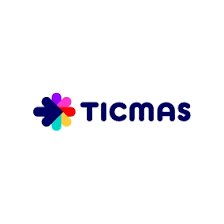
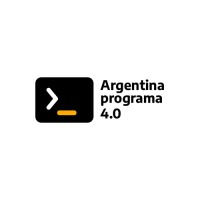

Data Analytics — Unicorn Academy
Unicorn Academy | 2025 / 2026
Bootcamp intensivo en Análisis de Datos orientado al desarrollo de habilidades técnicas y de negocio para la toma de decisiones basada en datos. La formación incluyó herramientas como Google Sheets, SQL, Power BI y Python, aplicadas a proyectos reales y casos prácticos de análisis, visualización y automatización de datos.
Metodologías para la Gestión de Proyectos
Edutin Academy | 2024
Formación orientada a metodologías para la gestión de proyectos, con enfoque en planificación, organización, seguimiento y mejora continua de procesos. El programa abordó metodologías tradicionales y ágiles, incluyendo Waterfall, PRINCE2, Agile, Scrum, Lean, Kanban y Six Sigma, aplicadas al análisis y ejecución de proyectos en distintos entornos organizacionales.
Desarrollo Web Front End
Educado en Argentina | 2023
Formación en Desarrollo Web Front End orientada al diseño y construcción de interfaces web modernas, responsivas e interactivas. El programa incluyó HTML, CSS, JavaScript, Bootstrap, jQuery y React, además de conceptos de accesibilidad, optimización de rendimiento, testing y buenas prácticas de desarrollo web.

Procesamiento de datos con Python
Ticmas Academy | 2023
Formación orientada al procesamiento y análisis de datos utilizando Python, con enfoque en programación aplicada, manipulación de datos y fundamentos de Machine Learning. El programa incluyó estructuras de programación, manejo de variables, funciones, programación orientada a objetos y utilización de librerías como Pandas para procesamiento y análisis de información.
Primeros pasos del desarrollo frontend en el marco de Argentina Programa 4.0
Ticmas Academy | 2023
Formación introductoria en Desarrollo Front End orientada a la creación de aplicaciones y sitios web modernos, incorporando fundamentos de programación, diseño web y tecnologías utilizadas en entornos profesionales. El programa incluyó HTML5, CSS, Flexbox, JavaScript, Git, frameworks de estilos y conceptos de publicación y versionado de proyectos web.

Argentina Programa 2022
Seprogramar | 2022
Formación introductoria en programación y lógica computacional dentro del programa nacional Argentina Programa. El curso estuvo orientado al aprendizaje de fundamentos básicos de programación, resolución de problemas y pensamiento lógico aplicado al desarrollo de software, mediante ejercicios prácticos y entornos de aprendizaje interactivos.